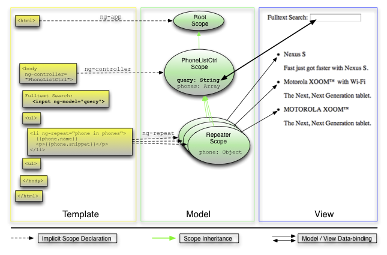

迭代器过滤排序
我们在上一步做了很多基础性的训练，所以现在我们可以来做一些简单的事情喽。我们要加入全文检索功能（没错，这个真的非常简单！）。同时，我们也会写一个端到端测试，因为一个好的端到端测试可以帮上很大忙。它监视着你的应用，并且在发生回归的时候迅速报告。
请重置工作目录：
git checkout -f step-3我们的应用现在有了一个搜索框。注意到页面上的手机列表随着用户在搜索框中的输入而变化。
步骤2和步骤3之间最重要的不同在下面列出。你可以在GitHub里看到完整的差别。
控制器
我们对控制器不做任何修改。
模板
app/index.html
<div class="container-fluid">
<div class="row-fluid">
<div class="span2">
<!--Sidebar content-->
Search: <input ng-model="query">
</div>
<div class="span10">
<!--Body content-->
<ul class="phones">
<li ng-repeat="phone in phones | filter:query">
{{phone.name}}
<p>{{phone.snippet}}</p>
</li>
</ul>
</div>
</div>
</div>我们现在添加了一个<input>标签，并且使用AngularJS的$filter函数来处理ngRepeat指令的输入。
这样允许用户输入一个搜索条件，立刻就能看到对电话列表的搜索结果。我们来解释一下新的代码：
-
数据绑定： 这是AngularJS的一个核心特性。当页面加载的时候，AngularJS会根据输入框的属性值名字，将其与数据模型中相同名字的变量绑定在一起，以确保两者的同步性。
在这段代码中，用户在输入框中输入的数据名字称作
query，会立刻作为列表迭代器（phone in phones | filter:query`）其过滤器的输入。当数据模型引起迭代器输入变化的时候，迭代器可以高效得更新DOM将数据模型最新的状态反映出来。

-
使用
filter过滤器：filter函数使用query的值来创建一个只包含匹配query记录的新数组。ngRepeat会根据filter过滤器生成的手机记录数据数组来自动更新视图。整个过程对于开发者来说都是透明的。
测试
在步骤2，我们学习了编写和运行一个测试的方法。单元测试用来测试我们用js编写的控制器和其他组件都非常方便，但是不能方便的对DOM操作和应用集成进行测试。对于这些来说，端到端测试是一个更好的选择。
搜索特性是完全通过模板和数据绑定实现的，所以我们的第一个端到端测试就来验证这些特性是否符合我们的预期。
test/e2e/scenarios.js：
describe('PhoneCat App', function() {
describe('Phone list view', function() {
beforeEach(function() {
browser().navigateTo('../../app/index.html');
});
it('should filter the phone list as user types into the search box', function() {
expect(repeater('.phones li').count()).toBe(3);
input('query').enter('nexus');
expect(repeater('.phones li').count()).toBe(1);
input('query').enter('motorola');
expect(repeater('.phones li').count()).toBe(2);
});
});
});尽管这段测试代码的语法看起来和我们之前用Jasmine写的单元测试非常像，但是端到端测试使用的是AngularJS端到端测试器提供的接口。
运行一个端到端测试，在浏览器新标签页中打开下面任意一个：
- node.js用户：http://localhost:8000/test/e2e/runner.html
- 使用其他http服务器的用户：
http://localhost:[port-number]/[context-path]/test/e2e/runner.html - 访客：http://angular.github.com/angular-phonecat/step-3/test/e2e/runner.html
这个测试验证了搜素框和迭代器被正确地集成起来。你可以发现，在AngularJS里写一个端到端测试多么的简单。尽管这个例子仅仅是一个简单的测试，但是用它来构建任何一个复杂、可读的端到端测试都很容易。
练习
- 在
index.html模板中添加一个{{query}}绑定来实时显示query模型的当前值，然后观察他们是如何根据输入框中的值而变化。 -
现在我们来看一下我们怎么让
query模型的值出现在HTML的页面标题上。你或许认为像下面这样在
title标签上加上一个绑定就行了：<title>Google Phone Gallery: {{query}}</title>但是，当你重载页面的时候，你根本没办法得到期望的结果。这是因为
query模型仅仅在body元素定义的作用域内才有效。<body ng-controller="PhoneListCtrl">如果你想让
<title>元素绑定上query模型，你必须把ngController声明移动到HTML元素上，因为它是title和body元素的共同祖先。<html ng-app ng-controller="PhoneListCtrl">一定要注意把
body元素上的ng-controller声明给删了。当绑定两个花括号在
title元素上可以实现我们的目标，但是你或许发现了，页面正加载的时候它们已经显示给用户看了。一个更好的解决方案是使用ngBind或者ngBindTemplate指令，它们在页面加载时对用户是不可见的：<title ng-bind-template="Google Phone Gallery: {{query}}">Google Phone Gallery</title> -
在
test/e2e/scenarios.js的describe块中加入下面这些端到端测试代码：it('should display the current filter value within an element with id "status"', function() { expect(element('#status').text()).toMatch(/Current filter: \s*$/); input('query').enter('nexus'); expect(element('#status').text()).toMatch(/Current filter: nexus\s*$/); //alternative version of the last assertion that tests just the value of the binding using('#status').expect(binding('query')).toBe('nexus'); });刷新浏览器，端到端测试器会报告测试失败。为了让测试通过，编辑
index.html，添加一个id为“status”的div或者p元素，内容是一个query绑定，再加上Current filter:前缀。例如：<div id="status">Current filter: {{query}}</div> -
在端到端测试里面加一条
pause();语句，重新跑一遍。你将发现测试器暂停了！这样允许你有机会在测试运行过程中查看你应用的状态。测试应用是实时的！你可以更换搜索内容来证明。稍有经验你就会知道，这对于在端到端测试中迅速找到问题是多么的关键。
总结
我们现在添加了全文搜索功能，并且完成一个测试证明了搜索是对的！现在让我们继续到下一课双向绑定来看看给我们的手机应用增加排序功能。